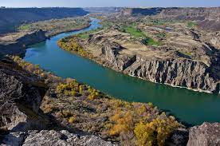
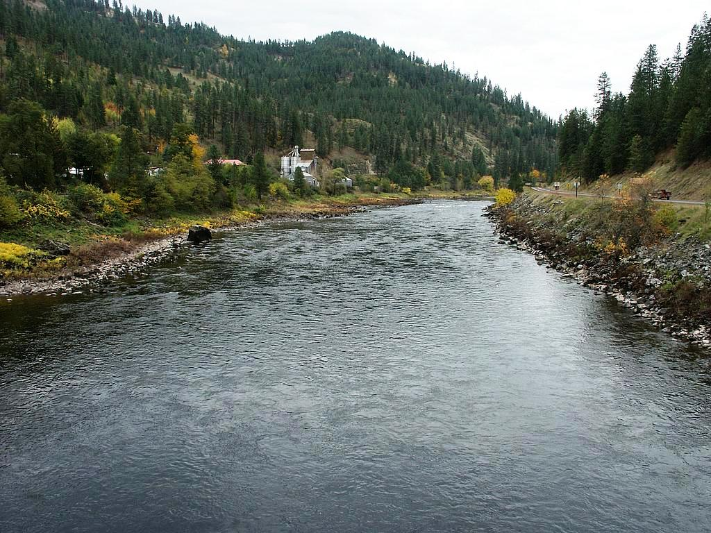
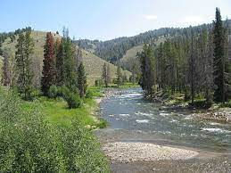

Snake River
At 1,078 miles long, it is the largest tributary of the Columbia River, in turn the largest North American river that empties into the Pacific Ocean.

Clearwater River
Its length is 74.8 miles and it flows westward from the Bitterroot Mountains along the Idaho-Montana border, and joins the Snake River at Lewiston.
